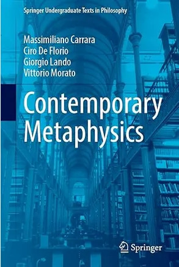

Contemporary Metaphysics
Book review
If you like reading about philosophy, here's a free, weekly newsletter with articles just like this one: Send it to me!

An interesting idea and a great table of contents, but the execution is unclear about who the ideal reader is — and will really satisfy nobody.
The Book
There are fundamentally two kinds of reviews. Show me any book on the philosophy of AI, or love, or happiness, and I’ll tell you where the author went wrong, where he cut corners, and where his explanations shine. That’s me as an expert, reading a book and giving my informed opinion. This kind of review can be useful but one thing it cannot do: it can never approach a book in quite the same way as the book’s intended audience. The reviewer’s perspective is irrevocably tainted by their knowledge of the topic. But then, there is also the other kind of review — one where the reviewer is part of the audience for the book. Where they are not an expert, but a learner, not looking to find flaws in the book, but to learn from it. And this is how I will approach this review today.

I know next to nothing about metaphysics. Sure, I’ve studied a few courses many decades ago, when telephones stopped working when you tried to pull them out of the wall, and when we listened to music on cassettes that would melt in the sun and require delicate surgery to restore the flimsy tape into a new shell. But I’ve long ago forgotten all of that. By my own constitution, I have an intense dislike of metaphysics as a topic. I’ve always been joking that I’m one of those people who philosophise with a hammer rather than with a scalpel. I’m drawn to bold statements, broad, sweeping debates and daring claims. Metaphysics always seemed to me to be just the opposite: a discipline where for a hundred years or so people have been making smaller and smaller distinctions, taking apart concepts and terms with the infinite patience of a clock-maker, and then trying to put everything back together again. The winner is the one who manages to put the thing back together so that it actually works — but I never saw anyone succeed at this game — which just prompts another faction to engage with even more intricate analyses of what it even means for a clock to work. I never had the patience or, to be honest, the intelligence for any of that. This is why I’m so excited to discuss today’s book: an introduction to metaphysics. This review will not be an expert’s opinion, but a student’s experience trying to finally learn metaphysics. Will I succeed? Let’s see…
There are these two young fish swimming along and they happen to meet an older fish swimming the other way, who nods at them and says “Morning, boys. How’s the water?” And the two young fish swim on for a bit, and then eventually one of them looks over at the other and goes “What the hell is water?” (David Foster Wallace, This Is Water)
So begins the introduction to the book. It is a good start — the quote is from one of my favourite speeches, where Wallace talks about how we fail to perceive the world around us because we are so used to it that it becomes invisible. I can see where this is going, and the authors here lean into that sentiment: metaphysics seems to be dealing with absurd questions, not because these questions are indeed absurd, but because we are so used to our world that we fail to see that they are valid questions. They address directly the hostile attitude that many modern readers, even well-known philosophers, have or have had towards metaphysics (“Carnap’s definition of metaphysicians as ‘musicians without musical ability’”). This is all encouraging so far. The authors are not going to present us with a tome of obscure abstractions, but they are going to speak to readers who really want to understand what metaphysics is all about. And they understand that we don’t even get why this is an important topic.
A little further down in the introduction, I do stumble upon a warning sign, though. The authors say that they will open “each chapter … with a little story (Open Your Eyes!) in which our heroes (Alice, Bob, Giggino, and Giggina, among others) end up discussing metaphysics, sometimes without realising it.” I’m not sure that I am enthusiastic about this. These cutesy topic introductions can quickly become tedious and come across as patronising. They can be done well and serve the content (Goedel, Escher, Bach is a glorious example of this!) but most often they tend to fall flat. And the question is also: who is the intended reader of this book? I would expect stories about Alice and Bob to appeal to a different audience than the buyers of a Springer volume called “Contemporary Metaphysics.” I would assume that if you buy a book like this, you will not need, or even appreciate, funny stories of Alice and Bob, or Giggino and Giggina. You know what you are getting into, and you are here for the expertise and the content — not for the amusing intros. But we will see how it goes later on.
Your ad-blocker ate the form? Just click here to subscribe!
Contents
And with this, we have arrived at the table of contents. This is a book of roughly 260 pages, that covers a lot of ground:
- Tools — Discussing common sense, argumentation, definitions and thought experiments.
- Metametaphysics — Discussing the history of philosophy, metaphysics and science, fundamentality, and the epistemology of metaphysics.
- Identity — Discussing definitions of identity in public discourse versus in metaphysics.
- Existence — Asking the questions “what exists?” and discussing various reactions and answers to this question.
- Mereology — Discussing composition, extensionality, ontological economu, the Problem of the Many, universalism and nihilism.
- Structures and Structured Entities — Order, repetition, stratification. Structure, existence and identity. Substance, form and matter. Propositions and facts.
- Properties and Relations — Nominalism, universals, tropes, classes of individuals, kinds of types and relations.
- Modality — The Categorical Hypothesis, Quinean Scepticism, possible worlds, Lewis’ Concretism and Plantinga’s Abstractionism.
- Essences and Dispositions — Essentialism, essential properties, Fine’s Definitional Approach, dispositions, and Vetter’s Dispositional Analysis of Modality.
- Grounding — Characteristics, grounding and modality, reduction, supervenience, causation.
- Time — static and dynamic conceptions, its ontology, presentism, growing blocks, eternalism, the topology of time.
- Persistence — The Metaphysics of Time, the problem of change.
- Abstract Objects
- God — God’s existence; ontological, cosmological and teleological arguments, divine attributes, the Trinity.
- Artefacts — The distinction between artefacts and natural objects.
That’s quite a coverage, but at around 16 pages per chapter it seems manageable for the beginner and not too detailed. Let’s now have a look at two select sections.
The Price
But before we go there, one more quick remark about the price of the book. This thing costs one cent less than a hundred USD, and a very similar number of Euros. Even the Kindle version will set you back almost 80 USD. These prices are unscrupulous and deplorable, especially for an ebook that has near zero production and distribution costs. And if my past experiences with academic publishers are any indication, the authors are not going to get anything out of the book either. So why does Springer think that it is morally defensible to charge 80 dollars for an ebook that should cost 20 at most? Like medicine prices that are often horrendously inflated because health insurance companies pay the bill, academic publishers rely on the fact that universities and libraries will eventually cough up public funds that should have been used to support and educate young people and that now, instead, are diverted to bolster Springer’s bottom line. It is, of course, no fault of the authors of this volume, but it should always be emphasised that academic publishing is fundamentally broken and that asking for a hundred bucks for a book that was acquired for free, likely edited by AI, and published at no cost is fundamentally immoral and should not be supported or accepted. Not by authors, not by libraries, and not by readers.
God
I’m cheating a bit here, because I said that I’d read this as a beginner in metaphysics, but I’m also curious to see how good their treatment of material is that I do know a bit about. And I’ve taught a course on the philosophy of religion, so let’s begin there.
As every chapter, this one begins with a half-page dialogue between two people, in this case, Alice and Bob. They are standing outside at night, looking at the stars, and Alice suggests that the magnificent display of the heavens must have been created by a God. Here’s what this intro sounds like:
Open Your Eyes!
Alice and Bob step outside for a moment, to get some air – a little break during a beautiful end-of-summer party. The night is quiet and still warm, although, thankfully, the stifling mugginess of July is only a memory. The clear sky is dotted with hundreds of stars. You can even see the white halo of the Milky Way, which is not often the case. Alice is entranced by the spectacle: “It’s beautiful, isn’t it?”. This time Bob agrees: “Yes, it’s wonderful”. “Does it never occur to you”, Alice resumes, “that all this must be something more than a product of chance, of the chaotic encounter of billions of particles? That, ultimately, there must be a reason for everything, a deep meaning to the cosmos, to life, and to us as human beings?” … [Bob replies that he understands this sentiment, but he’s too rational to draw the conclusion that there must be a God.] — Alice notices it, draws closer, and almost whispers: “But in the end, perhaps, reason must give way to something else, something more. . . intuitive. Something you feel rather than think.” … [Bob is not convinced.] Alice hugs Bob a little tighter. “It’s a little chilly now,” she replies and smiles. Bob forgets for a moment the things he has talked about with Alice, and realises just how beautiful she is.
Well, it’s an Italian book, I guess, although they did take their time (we’re on page 235, and this is the last time we’ll hear of the two — one would have liked to know what happens next!). And a thank you to the authors for reducing Alice to her physical appearance. In the end, it does not matter much what Alice says or thinks — as long as her beauty sufficiently pleases Bob. This would have been a good place for the editors at Springer to earn their hundred bucks per copy by explaining to the authors something about 21st-century attitudes towards women thinkers — but alas, it seems that even this would be too much to ask. Alice has some more appearances throughout the chapter, where she provides examples for divine foreknowledge and predestination (can she choose to eat an ice-cream, or has God already made that choice for her?), but we don’t further engage with her intellectual side.
But let’s start at the beginning. The chapter starts with conditions that any proof for the existence of God must fulfil: It must be a deductive or a strong inductive argument, with true premises, and it must be relevant, that is, it must prove the existence of a being that can be identified with God.
And then we’re jumping into the ontological argument itself. Rather than starting with Anselm, who is easy to introduce and discuss without much prior knowledge, the authors present this version:
Necessarily, if God exists, then God necessarily exists. (Premise 1)
It is possible that God exists. (Premise 2)
Therefore
God necessarily exists. (Conclusion)
The proof (with a few sentences left out at the beginning) goes like this:
Let us assume that w1 is the actual world, in which you are reading this wonderful metaphysics textbook. Now, what this modal version of the ontological argument holds is that if the existence of God is at least possible, then the existence of God is necessary. Let us see why. Premise 2 tells us that in the actual world w1 it is possible for God to exist; this means that there is another possible world (say, w2) in which God exists. But note what Premise 1 states: necessarily, if God exists, God necessarily exists. This means that in every possible world, if God exists, He necessarily exists. Now, in w2 God exists. Hence, God exists necessarily—that is, He exists in all possible worlds, including ours. Therefore, if God is possible, then God exists and necessarily exists.
Would a reader without prior knowledge of modal concepts be able to understand this? The authors have introduced possible worlds and modality in chapter 8, so if the reader did not skip ahead, they might be able to make some sense of this explanation. But in the following one page (which is all the space given to this argument), they don’t really engage with the argument itself very much. They don’t attempt to explain the sentences and concepts in the above quote in detail. Instead, they first talk about the advantages of the argument (half page) and then about Kant’s criticism of it (another half page). One feels that, yes, the proof has somehow been discussed; but that it’s not quite enough to let the reader feel that they are now comfortable with it — that they can themselves explain and evaluate it.
Moving on, the cosmological argument is presented as:
Contingent entities exist. (Premise 1)
Every contingent entity requires an (explanation.) (Premise 2)
Therefore
There must be a necessary entity that explains the existence of contingent entities (Conclusion)
Looking at this, I think we can already see one of the characteristics of the book’s treatment of historical arguments: they don’t really discuss the historically most prominent, but the currently perhaps most defensible versions of the arguments — from a metaphysician’s point of view. This has the drawback that the reader misses out on a lot of historical context, and that they also don’t really see the easier-to-understand-and-refute versions of these arguments. Instead, they are presented with pretty abstract versions of them, that require advanced concepts to be understood. But, unfortunately, the space is not available to the authors to provide these explanations that would be required in their full length. So that, in the end, a vague treatment of the arguments is all that they are able to provide. Enough perhaps to have the impression that one now has heard of each argument, but not enough to be able to confidently handle it. For example, the above argument gets only one, 17-line long paragraph of discussion, briefly introducing the principle of sufficient reason and some notes on it. The treatment ends thus:
According to others, e.g., Russell, “the universe is just there and that is all”: there is no explanation of this fact, meaning it is a brute contingency, not open to further explanation. Finally, according to others still, the totality of contingent things needs no explanation, because it is in fact necessary. The universe, i.e., the totality of concrete entities, is necessary, i.e., it could not not exist and hence does not need any transcendent explanation.
I feel that this is horribly hurried, and not at all sufficient to make the reader understand what’s happening.
The following sections on teleological arguments and divine attributes are a bit more extensive and better explained, but, in my view, suffer from the same lack of historical context. For example, the chapter on the Trinity does discuss the different alternative interpretations, but does not mention at all the church’s stance on the nature of God. As I understand it, every single non-contradictory interpretation of the Trinity constitutes a heresy of some kind, but this is never mentioned in the book. So, although the treatment is clear and useful, it leaves the reader with a few arguments that are presented out of context, and with little understanding of the history of the topic. You may think that this is okay or not — but it is certainly something to be aware of, and something that the reader must accept as a premise for the whole book: that the history of philosophy is not as important as the logic of the arguments themselves. I know that some of my colleagues like to teach philosophy like that — but for me, this takes all the fun out of the subject and it also makes things harder to understand. Difficult arguments are much easier to understand in the historical context in which they first appeared, it would seem to me, and beginners in philosophy enjoy watching the discussion of particular points develop over time into more and more complex arguments. But perhaps this is just a matter of taste.
Quinean Scepticism
Let’s now look at another section of the book, this time something I know nothing about: the distinction between categorical and dispositional properties. The authors write (and this is essentially how the Modality chapter begins):
The language of the theory (let us call the theory, rather unimaginatively, “T ”) contains a proper name for each existing object and a predicate for each categorical property (categorical properties are properties that an object actually possesses and manifests, as opposed to dispositional properties, which are properties that an object only manifests if certain conditions are fulfilled; on the latter type of property, see Chap. 9). If an existing object possesses a certain property, then T contains or implies a sentence stating that such an object has this property; if the object does not possess this property, then T contains or implies a sentence stating that such an object does not possess this property.
Well, I can, kind-of, make some sense of that. But I’m a professional teacher of philosophy. Would a normal person on the street, or even a first year student looking for an introduction to metaphysics, really be able to understand this passage? Note also the quite reader-unfriendly reference to Chapter 9. This happens more often throughout the book, and immediately brought to mind Spinoza’s Ethics. I understand that occasionally one might have to point readers to another place, but if overdone, and in a place where the reference is not only providing more context, but is essential to understanding the present passage, it is really off-putting. The “latter type of property” should have been explained again here, at least in basic terms. Otherwise reading the book is in danger of becoming an act of studying or, worse, deciphering, that requires the reader to take notes in order to be able to follow the present thought.
But let’s look at the example that follows this passage and that is supposed to illustrate it:
Assuming, for simplicity’s sake, that T is expressed in English, if Aldo is both Italian and human, and is not a reptile and is not English, T will contain or imply “Aldo is Italian”, “Aldo is human”, “Aldo is not a reptile”, and “Aldo is not English”. … The link between Aldo and the property of being human seems different from the link between Aldo and the property of being Italian. Indeed, it seems plausible that Aldo could not have existed without being human, whereas he could have existed without being Italian.
Really? Why is that? If Aldo was a reptile, would he be less Aldo than the human Aldo is human (or Aldo)? Does my dog, Donald, exist less than the US president? Or is he less of a Donald? And what if Aldo was not a reptile but a woman? Would he then be less Aldo? Could Aldo “not have existed” as a woman? — I suspect that I know what the authors want to say here, but they certainly don’t do a good enough job of saying it clearly, especially since this passage is supposed to illustrate and clarify essential properties. Why is being human more essential than being Italian? A German Aldo (or a woman, or a reptile Aldo) would also, in many ways, not be that Aldo, but would still be Aldo in many other relevant ways. But let’s read on:
The property of being human would therefore be an essential property for Aldo, whereas the property of being Italian would be an accidental property of his. Quine’s scepticism towards modal notions, or at least towards de dicto modal truths, is partly motivated by his scepticism towards the notion of analyticity (i.e., the notion of truth in virtue of meaning). In order to disprove this notion, Quine relies on a linguistic conception of necessity, according to which “it is necessary that P ” is true if and only if P is analytic, and “it is possible that P ” is instead false if and only if the negation of P is analytic. The problem is that the notion of necessity in turn seems indispensable to define analyticity, through the notion of synonymy: a sentence is analytic if and only if it can be transformed into a logical truth by the substitution of synonymous expressions, and two expressions are synonymous if and only if they are necessarily interchangeable in every context. We thus have a circle of notions (a vicious one, for Quine) that presuppose each other (analyticity, synonymy, necessity), without any of them being particularly clear.
… as is this passage, I’m afraid.
For Whom?
Without doubt, this is a nice, handsome book that covers a lot of ground and, as far as I can see, attempts to present the most important topics that an undergraduate metaphysics class might discuss. But the treatment of the topics is more confusing than enlightening, and I think that this is because of the unclear ideal audience for this book. It feels as if the authors wanted to write a textbook for a first course in metaphysics, but then, under pressure of their publisher, were forced to add elements that would promise to make it more attractive to a wider audience — thus the inclusion of Alice, Bob and the others.
But this, together with the introduction that tries to motivate the layman to engage with metaphysical questions, creates an unfortunate situation: the chapter intros now speak to the uninitiated, casual reader, while the meat of the text tries to give a very compressed overview of far more technical points, in a language and a presentation style that is not accessible to the non-professional. Difficult terms are not sufficiently explained, and where explanations exist, they are in other parts of the book that the reader is sent off to study before they can return to the discussion at hand.
To add to the difficulty of the text, historical context is largely absent from the discussion, and the arguments presented are perhaps the strongest or most sensible versions, but not always the easiest to understand. One could give a much more entertaining and accessible exposition of the Ontological Argument, for example, by talking about perfect islands, rather than the necessity of God’s existence in different possible worlds. And the same applies to cosmological arguments and many other topics discussed throughout the book. The explanations themselves feel hurried, as if the authors did not have enough space to cover them properly. Often, they explicitly say that there would be more to say about a point, but that they cannot go into that right now. And then the chapter ends.
This makes the text both too superficial and too hard to read and understand. The treatment is basic, and though it hits all the talking points that one expects (the main arguments for many points are named and briefly discussed, as far as I can judge that), the explanations themselves are so short that they have to throw technical jargon at the reader that is never sufficiently explained.
This makes the book more into something like a reference work for undergraduate beginners in metaphysics. If one just wanted to know what the main lines of argumentation related to some topic are, one could likely find their names and a few words of description in this book and then go look them up in detail elsewhere. But the reader will not, I think, be able to get a working knowledge of metaphysics from this book alone. And if the reader is not an undergraduate student under the pressure to understand Quine for an exam, he or she will likely have dropped the book after the first chapter anyway. The cutesy introductory dialogues at the start of each chapter don’t contribute anything to the understanding of the quite terse and technical points that follow, and are likely to mislead unsuspecting general readers into picking up this book and then made to feel stupid because they still can’t understand what metaphysics is about.
The book began with the promise to help fish understand what water is, or why water is even an issue. After sampling two chapters of it, I feel that I still don’t know why I, as a fish, should be concerned about this thing called water.

Andreas Matthias on Daily Philosophy: